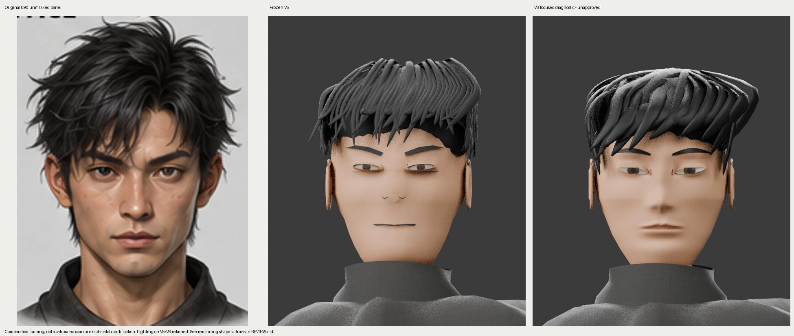
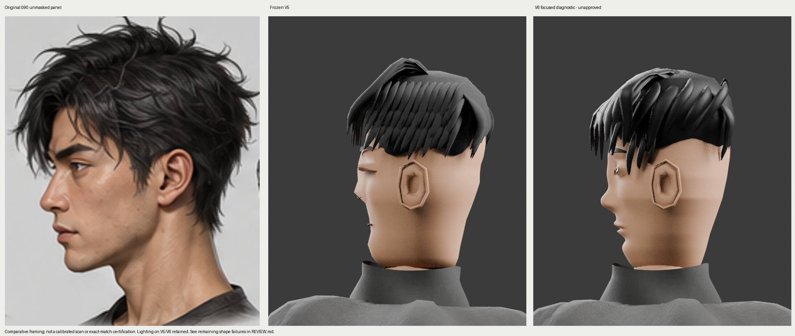

Source090 / frozen V5 / V6. Real 3D geometry and actual Blender CPU renders. Further eye, nose, lip, jaw and hair work is required.
Repair and remaining-failure record · Frozen source/exports/render hashes · Actual model landmarks · Approximate source landmarks

